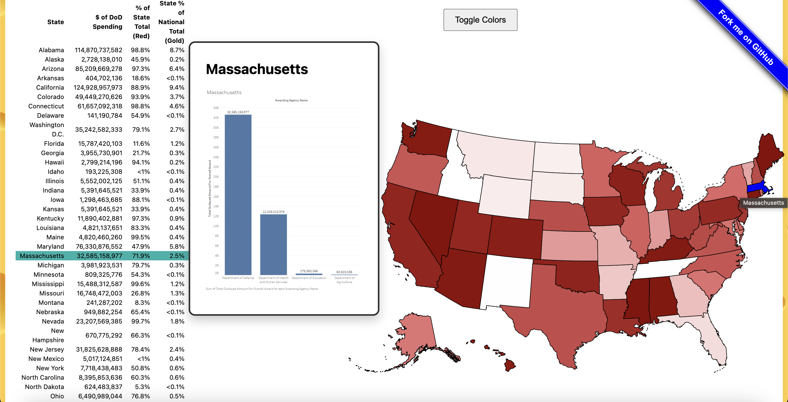

Timeline: August 2024 - December 2024
Course: Information Visualization - Brandeis University

Project Overview
This project focused on creating meaningful data visualizations to uncover insights from complex datasets on the spending of the Department of Defense per state. Working in a collaborative team environment, we held weekly sprint reviews and engaged in pair programming sessions to iteratively develop our visualizations.
The project emphasized both technical skills in data analysis and visualization tools, as well as soft skills like collaboration, communication, and Agile methodologies.
Key Components
- Weekly Sprint Reviews: Regular team meetings to review progress, discuss challenges, and plan upcoming work
- Pair Programming: Collaborative coding sessions that improved code quality and knowledge sharing
- Interactive Dashboards: Created dynamic visualizations that allow users to explore data from multiple perspectives
- Data Cleaning & Preparation: Processed raw datasets to ensure accuracy and usability
- Statistical Analysis: Applied statistical methods to identify trends and patterns in the data
Visualizations


(Visualization added soon)
Technical Approach
Data Processing: Used Python and R to clean, transform, and analyze large datasets, ensuring data quality and preparing it for visualization.
Visualization Design: Employed Tableau to create interactive dashboards that make complex data accessible and understandable to non-technical stakeholders.
Agile Methodology: Followed sprint-based development with regular standups, reviews, and retrospectives to maintain project momentum and team alignment.
Skills Developed
This project strengthened my abilities in data analysis, visualization design, and collaborative software development. I learned to work effectively in a team environment, communicate technical concepts clearly, and deliver results on a consistent schedule.
The experience also deepened my understanding of how to present data in ways that tell compelling stories and drive decision-making.